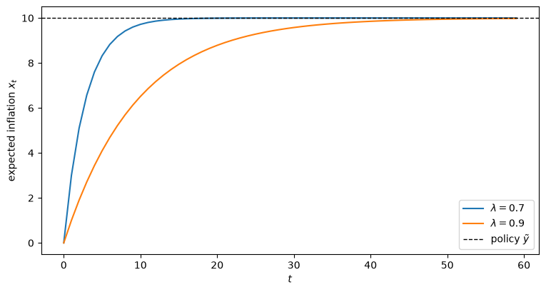
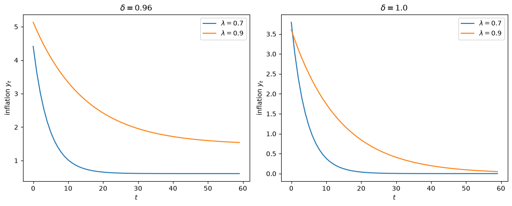
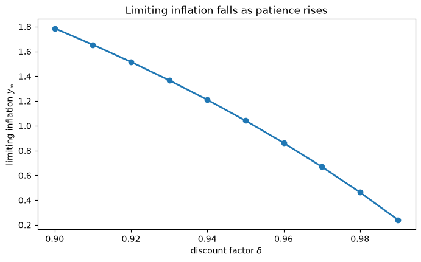

97. 适应性预期与费尔普斯问题#
除了 Anaconda 中已有的库之外，本讲座还将使用以下库：
!pip install quantecon
97.1. 概览#
他们无法望向远方， 他们无法看透深处， 但这何时曾是 他们守望的障碍？
——罗伯特·弗罗斯特
本讲座延续了 信誉问题 中开始研究的菲利普斯曲线权衡关系。
本讲座遵循 [Sargent, 1999] 第 5 章的内容。
可信的政府政策 追求优于纳什结果的结果，同时保持每个人都是理性的，结果发现了太多这样的结果：一个可持续值的连续统，而理论内部没有任何依据可以从中做出选择。
在这里，我们以尽可能小的方式退让这种完美性，保持政府是理性的，但给予公众一个机械式的预测规则。
我们将描述：
凯根-弗里德曼适应性预期假设，
[Phelps, 1967] 如何用它来构建一个政府控制问题，以及
适应性预期在早期自然率假说计量经济学检验中所起的作用。
其核心对象是费尔普斯问题：一个理性的政府在解决一个最优控制问题，而公众则用一个固定的、机械式的适应性法则来预测通货膨胀。
与 信誉问题 中的单期模型不同，现在政府考虑到经济会持续多个时期，并且今天的通货膨胀会影响明天的预期。
这种跨期联系可以改善结果，在极限情形下，甚至能维持拉姆齐结果。
费尔普斯问题是一个线性二次型（LQ）控制问题，因此我们用 QuantEcon 的 LQ 控制 工具来求解它。
让我们从一些导入开始：
import matplotlib.pyplot as plt
import numpy as np
import quantecon as qe
97.2. 适应性预期#
[Phelps, 1967] 为一个自然率模型构建了一个控制问题。
他放弃了公众的理性预期假设，但保留了政府的理性预期，并给公众分配了一个特定的机械式预测法则，而这个法则是政府已知的。
公众使用米尔顿·弗里德曼和 [Cagan, 1956] 的适应性预期方案：
其中 \(x_t\) 是公众对通货膨胀的预期，\(y_t\) 是通货膨胀率。
重新整理后得到 \(x_t = \lambda x_{t-1} + (1 - \lambda) y_{t-1}\)，因此预期通货膨胀是过去通货膨胀的几何分布滞后，
注意，(97.1) 是 信誉问题 中最小二乘学习算法的一个常数增益版本，其中常数 \((1 - \lambda)\) 起到了那里递减增益 \(t^{-1}\) 所起的作用。
方程 (97.2) 具有一个归纳性质：如果政府持续重复一个恒定的 \(y_t = \tilde y\) 政策，最终公众会逐渐将 \(x_t \approx \tilde y\) 作为其预期。
权重 \((1 - \lambda)\lambda^{i-1}\) 之和为一，因此一个永久维持的通货膨胀率最终会被完全预期到。
让我们用数值方法验证这个归纳性质。
def adaptive_forecast(y, λ, x0=0.0):
"Simulate x_t = λ x_{t-1} + (1-λ) y_{t-1}."
T = len(y)
x = np.empty(T)
x[0] = x0
for t in range(1, T):
x[t] = λ * x[t - 1] + (1 - λ) * y[t - 1]
return x
T = 60
y_const = np.full(T, 10.0) # a constant inflation policy
fig, ax = plt.subplots(figsize=(9, 4.5))
for λ in [0.7, 0.9]:
x = adaptive_forecast(y_const, λ)
ax.plot(x, lw=1.5, label=rf'$\lambda = {λ}$')
ax.axhline(10.0, color='k', ls='--', lw=1, label='policy $\\tilde y$')
ax.set_xlabel('$t$')
ax.set_ylabel('expected inflation $x_t$')
ax.legend()
plt.show()

图 97.1 适应性预期收敛到恒定通货膨胀政策：归纳性质#
在恒定政策下，公众的预期会收敛到该政策，\(\lambda\) 越大，收敛速度越慢。
正如我们下面所讨论的，索洛和托宾在检验自然率假说时正是利用了这个归纳性质。
97.3. 费尔普斯问题#
经济永远重复运行，政府用如下贴现准则来评估结果序列：
当 \(\delta = 1\) 时，我们在均值极限（切萨罗）意义上理解 (97.3)。
政府通过选择通货膨胀 \(y_t\) 的规则来最大化 (97.3)，同时受制于适应性预期方案 (97.1) 和预期增广的菲利普斯曲线：
由于预期通货膨胀 \(x_t\) 在第 \(t\) 期开始时就已预先确定，因此它是唯一的内生状态变量。
因此，政府的问题是一个带有以下要素的贴现 LQ 控制问题：
状态 \(s_t = \begin{bmatrix} 1 & x_t \end{bmatrix}^\top\)，
控制 \(y_t\)，以及
转移方程 \(x_{t+1} = \lambda x_t + (1 - \lambda) y_t\)。
97.3.1. 将问题转化为 LQ 形式#
令 \(U_t = a^\top s_t - \theta y_t\)，其中 \(a = \begin{bmatrix} U^* & \theta \end{bmatrix}^\top\)。
那么每期损失 \(\tfrac{1}{2}(U_t^2 + y_t^2)\) 等于
将其与 QuantEcon 的 LQ 损失 \(s_t^\top R s_t + y_t^\top Q y_t + 2 y_t^\top N s_t\) 进行匹配，并将转移方程与 \(s_{t+1} = A s_t + B y_t\) 进行匹配，得到
贴现因子为 \(\beta = \delta\)；(97.3) 中的缩放因子 \((1 - \delta)\) 不会影响最优策略。
class PhelpsProblem:
"""
The Phelps optimal-control problem: a rational government facing a
public that forecasts inflation adaptively with parameter λ.
"""
def __init__(self, θ=1.0, U_star=5.0, λ=0.7, δ=0.96):
self.θ, self.U_star, self.λ, self.δ = θ, U_star, λ, δ
a = np.array([[U_star], [θ]])
R = 0.5 * (a @ a.T)
Q = np.array([[0.5 * (θ**2 + 1)]])
N = -0.5 * θ * a.T
A = np.array([[1.0, 0.0], [0.0, λ]])
B = np.array([[0.0], [1 - λ]])
# δ = 1 (limit of means) is handled as the limit δ → 1
β = min(δ, 1 - 1e-7)
self.lq = qe.LQ(Q, R, A, B, N=N, beta=β)
P, F, d = self.lq.stationary_values()
# optimal rule y_t = f1 + f2 x_t
self.f1, self.f2 = -F[0, 0], -F[0, 1]
def simulate(self, x0=12.0, T=60):
"Disinflation path (U_t, y_t) starting from expectation x0."
θ, U_star, λ = self.θ, self.U_star, self.λ
U, y, x = np.empty(T), np.empty(T), x0
for t in range(T):
y[t] = self.f1 + self.f2 * x
U[t] = U_star - θ * (y[t] - x)
x = λ * x + (1 - λ) * y[t]
return U, y
最优规则的形式为 \(y_t = f_1 + f_2 x_t\)，其中 \(f_1 \neq 0\) 且 \(f_2 \neq 1\)。
这些不等式反映了公众并未使用最优的预测规则；如果反而是 \(f_1 = 0\) 且 \(f_2 = 1\)，那么我们将在所有历史情形下得到 \(y_t = x_t\)。
pp = PhelpsProblem(θ=1.0, U_star=5.0, λ=0.7, δ=0.96)
print(f"optimal rule: y_t = {pp.f1:.3f} + {pp.f2:.3f} x_t")
optimal rule: y_t = 0.406 + 0.334 x_t
97.3.2. 一个命题#
费尔普斯问题之所以有趣，原因在于以下结果。
命题 97.1 (δ = 1 最终维持拉姆齐结果)
在没有贴现的情况下（\(\delta = 1\)），政府会将 \(y_t\) 驱动至 \(0\)，即拉姆齐结果。
当 \(\delta = 1\) 时，\(\lambda\) 决定了向拉姆齐结果收敛的速度。
当 \(\delta < 1\) 时，\(y_t\) 的极限点取决于 \(\lambda\) 与 \(\delta\) 之间的比较关系。
当 \(\lambda < \delta\) 且 \(\delta\) 接近 \(1\) 时，政府的政策最终会近似达到拉姆齐结果。
在过渡路径上，公众的预期是错误的，但在稳态下由于归纳性质的作用，公众的预期是正确的。
97.4. 反通货膨胀路径#
现在我们来重现 [Sargent, 1999] 第 5 章中的反通货膨胀实验。
设 \(\theta = 1\) 且 \(U^* = 5\)，并从 20 世纪 70 年代末的初始条件 \(x_{-1} = y_{-1} = 12\) 开始政府的问题，这意味着 \(U = U^* = 5\)。
下表记录了在选定滞后期下失业率 \(U\) 和通货膨胀率 \(y\) 的路径，涉及两个贴现因子 \(\delta \in \{0.96, 1\}\) 和两个适应性参数 \(\lambda \in \{0.7, 0.9\}\)。
def disinflation_table(δ, lags=(1, 5, 20, 50)):
rows = []
for λ in [0.7, 0.9]:
U, y = PhelpsProblem(λ=λ, δ=δ).simulate(x0=12.0, T=max(lags) + 1)
for lag in lags:
rows.append((λ, lag, U[lag - 1], y[lag - 1]))
return rows
for δ in [0.96, 1.0]:
print(f"\n δ = {δ}")
print(f" {'λ':>4} {'lag':>4} {'U':>7} {'y':>7}")
for λ, lag, U, y in disinflation_table(δ):
print(f" {λ:>4} {lag:>4} {U:>7.1f} {y:>7.1f}")
δ = 0.96
λ lag U y
0.7 1 12.6 4.4
0.7 5 8.1 2.2
0.7 20 5.1 0.7
0.7 50 5.0 0.6
0.9 1 11.9 5.1
0.9 5 10.2 4.3
0.9 20 6.9 2.5
0.9 50 5.3 1.6
δ = 1.0
λ lag U y
0.7 1 13.2 3.8
0.7 5 8.3 1.5
0.7 20 5.1 0.0
0.7 50 5.0 0.0
0.9 1 13.4 3.6
0.9 5 11.3 2.7
0.9 20 7.1 0.9
0.9 50 5.2 0.1
在每种参数设置下，政府都会制造一场重大衰退，并立即将通货膨胀率降低到超过其最终极限值一半以上的程度。
在贴现情形（\(\delta = 0.96\)）中，通货膨胀率最终稳定在一个正值水平，且政府在 \(\lambda = 0.9\) 时接受比 \(\lambda = 0.7\) 时更长但更温和的衰退。
在无贴现情形（\(\delta = 1\)）中，通货膨胀率会一直被驱动到拉姆齐值零，\(\lambda\) 越大速度越慢。
让我们绘制完整的反通货膨胀路径。
fig, axes = plt.subplots(1, 2, figsize=(11, 4.5))
for δ, ax in zip([0.96, 1.0], axes):
for λ in [0.7, 0.9]:
U, y = PhelpsProblem(λ=λ, δ=δ).simulate(x0=12.0, T=60)
ax.plot(y, lw=1.5, label=rf'$\lambda = {λ}$')
ax.set_title(rf'$\delta = {δ}$')
ax.set_xlabel('$t$')
ax.set_ylabel('inflation $y_t$')
ax.legend()
plt.tight_layout()
plt.show()

图 97.2 菲尔普斯问题在有贴现和无贴现情形下的最优反通货膨胀路径#
无贴现问题将通货膨胀驱动至拉姆齐结果；而有贴现问题则未能达到这一水平。
97.5. 一般化的费尔普斯问题#
对于政府的控制问题而言，重要的是菲利普斯曲线的简化形式，而不是确定 \(x_t\) 的底层结构。
有必要陈述费尔普斯问题的一个更一般化版本，其中政府的模型是一个简化形式的分布滞后菲利普斯曲线。
定义向量
以及状态向量 \(X_t = \begin{bmatrix} X_{U,t}^\top & X_{y,t}^\top & 1 \end{bmatrix}^\top\)，其中收集了 \(t-1\) 期及更早时期的信息。
我们可以写出两条简化形式的菲利普斯曲线，它们仅在拟合方向上有所不同：
下标 \(C\) 和 \(K\) 分别代表古典型（将 \(U\) 对 \(y\) 回归）和凯恩斯型（将 \(y\) 对 \(U\) 回归）。
一般化的费尔普斯问题是要选择一个控制规律 \(\hat y_t = h X_{t-1}\)，以在受政府所信奉的菲利普斯曲线以及 \(y_t = \hat y_t + v_{2t}\)（其中 \(v_{2t}\) 为控制误差）约束的条件下，最大化 (97.3) 的期望值。
这诱导出一个从政府信念 \(\gamma\) 到其决策规则 \(h\) 的映射：
上文所求解的具体问题是一个特殊情形，其中通过将适应性预期假设 (97.1) 代入菲利普斯曲线 (97.4)，对 \(\gamma\) 施加了限制。
一旦完成这种代换，状态变量 \(x_t\) 就从视野中消失了。
这些对象——\(\gamma\)、\(\beta\)、\(h(\gamma)\)，以及两种拟合方向——正是我们在 自我确认均衡 中定义自我确认均衡所需要的关键要素。
备注
归纳假设是这样一种限制：在凯恩斯型菲利普斯曲线 \(y_t = \beta^\top X_{K,t} + \varepsilon_{K,t}\) 中， 滞后 \(y\) 值上的权重之和为一（等价地，在古典形式中，当期与滞后 \(y\) 值上的权重之和为零）。
在适应性预期下，这一点成立，因为 (97.2) 中的权重之和为一。
97.6. 检验自然率假说#
罗伯特·索洛和詹姆斯·托宾 [Solow, 1968, Tobin, 1968] 利用归纳假设检验了自然率假说。
将几何分布滞后 (97.2) 代入一条反转的菲利普斯曲线，得到
他们提出通过运行如下回归来检验自然率假说：
并将 \(b_1 < 1\) 的发现解读为存在斜率为 \(b_1 - 1\) 的通货膨胀与失业之间长期权衡关系的证据。
早期的实证研究发现 \(b_1 < 1\)，因此拒绝了自然率假说，转而支持一种长期权衡关系。
[King and Watson, 1994] 及其他学者后来指出，这种拒绝与不拒绝的模式，与通货膨胀率在 20 世纪 60 年代之后（而非之前）呈现单位根这一趋势是一致的，因此当 \(y_t\) 存在单位根时，单位和限制条件 \(b_1 = 1\) 与理性预期是相容的。
从费尔普斯控制问题的视角来看，自然率假说是否成立是次要的：无论 \(b_1 = 1\) 是否成立，费尔普斯问题都会为通货膨胀-失业选择赋予有趣的动态特征。
97.7. 牺牲率与费尔普斯模型的颠覆#
尽管费尔普斯的控制问题在归纳假设下对维持拉姆齐结果具有令人鼓舞的意义，但它也带有一段不光彩的历史。
在费尔普斯问题中，对于固定的 \(\delta < 1\)，总能找到一个足够接近 \(1\) 的 \(\lambda\)，使得高通胀预期会让政府想要避免进行反通货膨胀。
在 20 世纪 70 年代末，具有较长预期调整滞后的模型被用来建议不要降低通货膨胀。
关于牺牲率——即将通货膨胀降低一个百分点所需放弃的估计国内生产总值数量——的估计值被广泛流传。
需要吸取并延续下去的教训是：激活归纳假设最终可以带来更好的结果，但以费尔普斯、托宾和索洛所使用的形式，归纳假设背离了理性预期。
在 最优错误设定信念 和 自我确认均衡 中，我们赋予政府和公众更多的对称性，将类似 (97.1) 的更新方案应用于函数而非数字，并将 \(\lambda\) 从一个自由参数转变为一个均衡结果。
这里所求解的 LQ 费尔普斯问题会在 适应性学习与逃逸动态、逃离纳什通胀 和 先验、逃逸与学习循环 中再次出现，在那些讲座中，一个进行学习的政府每期都重新求解该问题——而激活归纳假设正是触发沃尔克式稳定化措施的原因。
97.8. 练习#
练习 97.1
上文的命题指出，当 \(\delta \to 1\) 时，政府会将通货膨胀驱动到拉姆齐值 \(0\)。
对于 \(\lambda = 0.8\)，请针对贴现因子网格 \(\delta \in \{0.90, 0.92, \ldots, 0.99\}\)，计算极限通货膨胀率 \(y_\infty\)（即经过长时间模拟后 \(y_t\) 所稳定到的值）。
将 \(y_\infty\) 对 \(\delta\) 作图，并确认随着 \(\delta \to 1\)，该值向零递减。
解答 练习 97.1
δ_grid = np.arange(0.90, 0.995, 0.01)
y_inf = []
for δ in δ_grid:
U, y = PhelpsProblem(λ=0.8, δ=δ).simulate(x0=12.0, T=400)
y_inf.append(y[-1])
fig, ax = plt.subplots(figsize=(8, 4.5))
ax.plot(δ_grid, y_inf, 'o-', lw=2)
ax.set_xlabel(r'discount factor $\delta$')
ax.set_ylabel(r'limiting inflation $y_\infty$')
ax.set_title('Limiting inflation falls as patience rises')
plt.show()

随着 \(\delta\) 向一上升，政府愿意接受为获得低预期通货膨胀的长期收益所需的过渡性衰退，因此极限通货膨胀率会向拉姆齐值零下降。
练习 97.2
直接验证最优策略的归纳性质。
以 \(\delta = 0.96\) 且 \(\lambda = 0.7\) 的贴现问题为例，模拟一条较长的反通货膨胀路径。
检验在稳态下，公众的预期 \(x_t\) 是否等于实际通货膨胀率 \(y_t\)（即公众在极限情形下不会被欺骗），尽管在过渡路径上预期是错误的。
解答 练习 97.2
pp = PhelpsProblem(θ=1.0, U_star=5.0, λ=0.7, δ=0.96)
U, y = pp.simulate(x0=12.0, T=200)
# reconstruct the expectation path implied by the adaptive rule
x = adaptive_forecast(np.concatenate([[12.0], y]), λ=0.7, x0=12.0)[1:]
print(f"steady-state inflation y_∞ = {y[-1]:.4f}")
print(f"steady-state expectation x_∞ = {x[-1]:.4f}")
print(f"gap = {y[-1] - x[-1]:.2e}")
steady-state inflation y_∞ = 0.6098
steady-state expectation x_∞ = 0.6098
gap = -2.22e-16
在稳态下，预期通货膨胀率与实际通货膨胀率一致，这证实了归纳性质使得公众的预测在极限情形下是正确的。